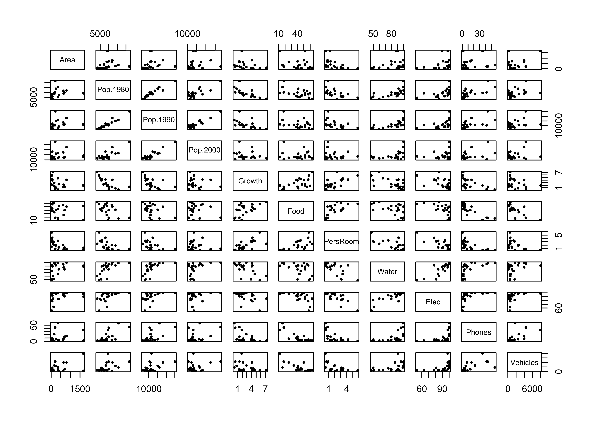
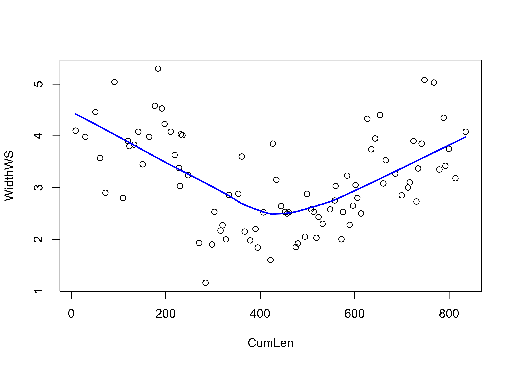
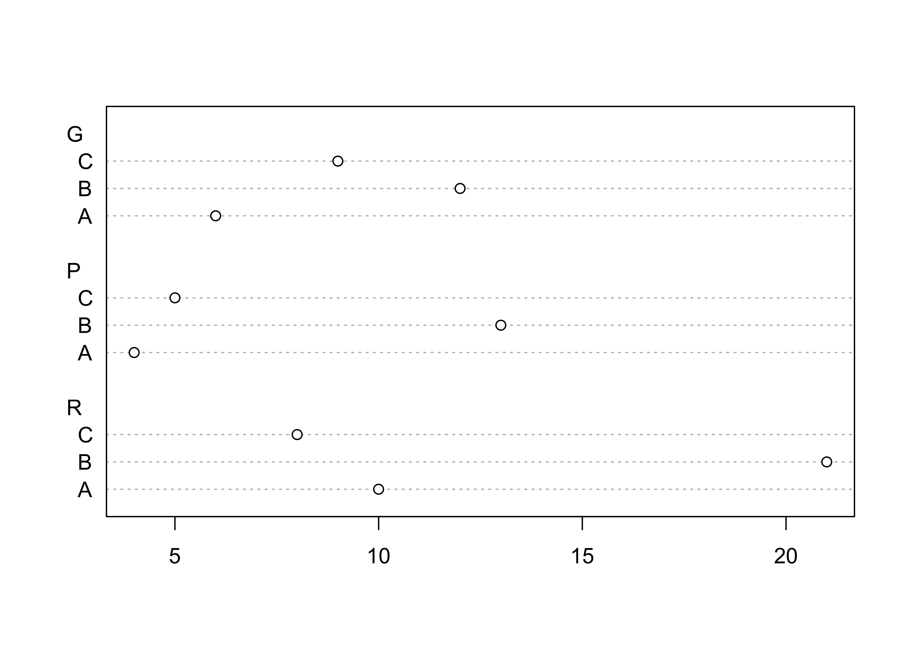
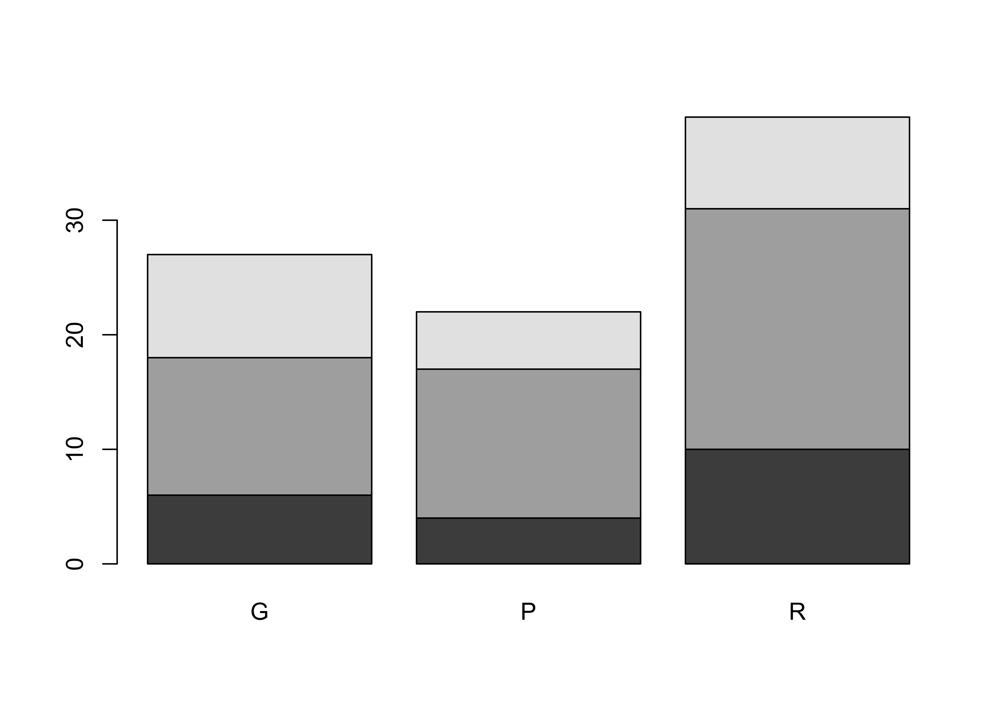
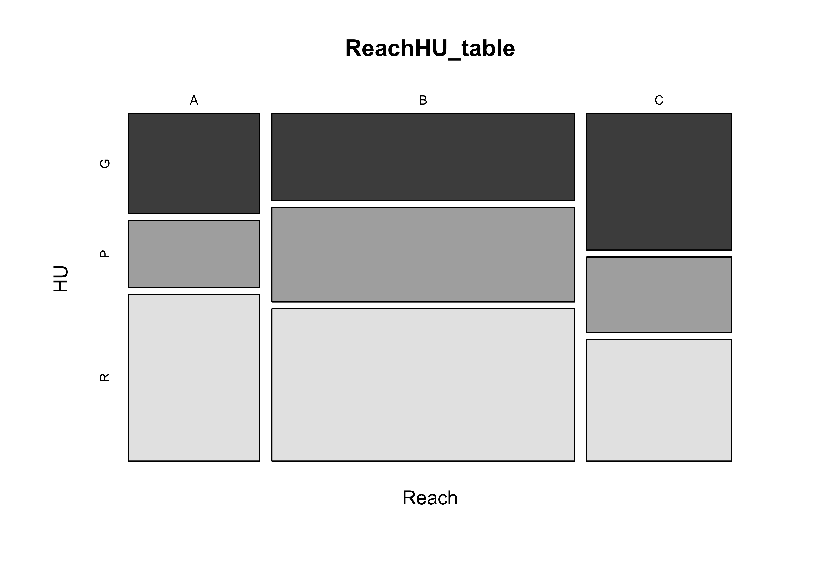
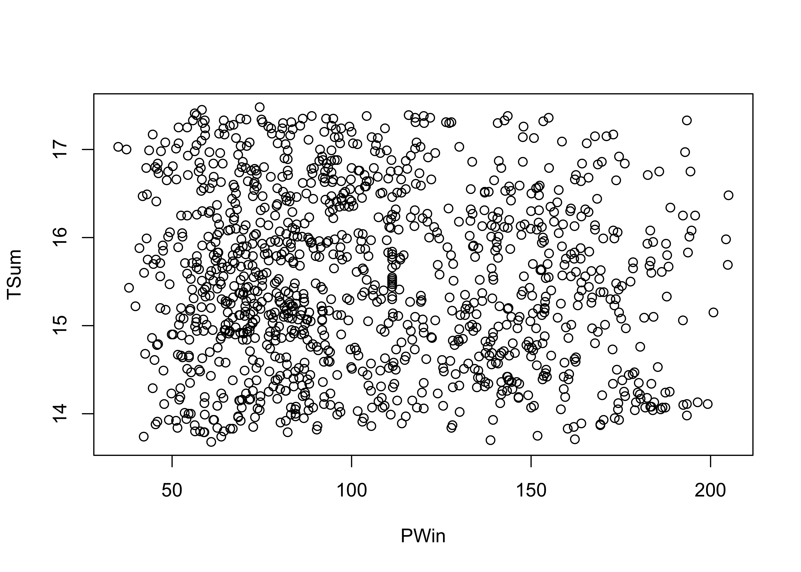
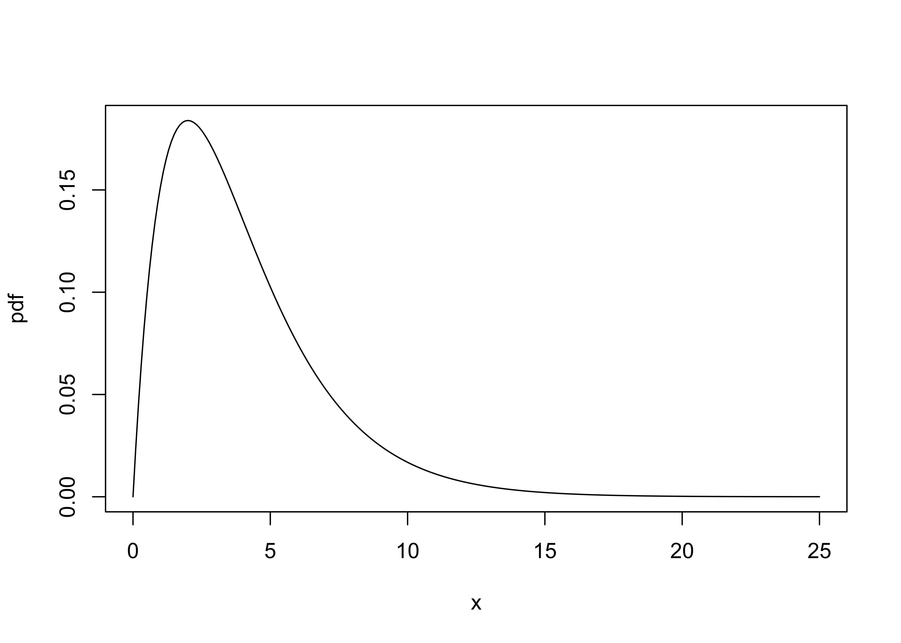

Descriptive statistics
NOTE: This page has been revised for Spring 2020, but may undergo further edits.
1 Introduction
There are a number of descriptive statistics that, like descriptive plots, provide basic information on the nature of a particular variable or set of variables. A statistic is simply a number that summarizes or represents a set of observations of a particular variable.
Before describing the statistics, it will be helpful to look at the summation operator and
2 Univariate descriptive statistics
In general, descriptive statistics–like the univariate descriptive plots–can be classified into three groups, those that measure 1) central tendency or location of a set of numbers, 2) variability or dispersion, and 3) the shape of the distribution. The univariate descriptive statistics can be thought of as companions to the univariate descriptive plots. The best way to develop an idea of what the statistics are summarizing or attempting to convey is to always produce a descriptive plot first.
2.1 Measures of Central Tendency
Mode
- definition: the most frequent class interval
Median
- definition: 50th percentile, center point
Mean or Average
Choosing a measure of central tendency
{kind=link}
{kind=link}
2.2 Measures of Variability, Scale or Dispersion
Range
- definition: (maximum value - minimum value)
Interquartile range
- definition: (75th percentile - 25th percentile) (i.e., width of the box in a boxplot)
Variance and standard deviation
Coefficient of variation
3 Univariate descriptive statistics – examples
Descriptive statistics can be most easily obtained in R using the summary() function. The summary command is generic in the sense that object or “argument” of the function could be anything. If the argument is a data frame, summary() returns descriptive statistics for each variable, whereas if the argument is a single variable, summary() just returns the descriptive statistics for that variable.
Data files for these examples (download to the working directory and read in): [scanvote.csv] [specmap.csv]
Summarize the scanvote data frame. (Note that it is not necessary to attach the data frame if the whole thing is being summarized.)
## District Yes Pop Country
## Ahvenanmaa: 1 Min. :25.50 Min. : 1.50 Fin:12
## Akershus : 1 1st Qu.:43.20 1st Qu.: 10.00 Nor:19
## Alvsborg : 1 Median :48.20 Median : 16.70 Swe:24
## Aust-Agder: 1 Mean :47.97 Mean : 52.02
## Blekinge : 1 3rd Qu.:53.80 3rd Qu.: 39.25
## Buskerud : 1 Max. :70.80 Max. :1016.80
## (Other) :49Individual descriptive statistics can be obtained using the following, self-explaining functions:
mean(), median(), max(), min(), range(), var(), sd(), quantile(), fivenum(), length(), which.max(), which.min()
The easiest way to illustrate what these functions do is to apply them to individual variables and see what they produce.
Descriptive statistics for individual groups of observations can be obtained using the tapply() function. For example,
## Fin Nor Swe
## 52.76667 44.16316 48.57500The tapply() function applies a particular function, mean() in this case, to groups of observations (specified here by the Country argument), of the variable Yes.
## $Fin
## Min. 1st Qu. Median Mean 3rd Qu. Max.
## 43.90 47.62 50.10 52.77 55.10 70.80
##
## $Nor
## Min. 1st Qu. Median Mean 3rd Qu. Max.
## 25.50 37.20 44.10 44.16 49.55 65.60
##
## $Swe
## Min. 1st Qu. Median Mean 3rd Qu. Max.
## 27.20 45.10 48.90 48.58 53.75 64.80Detach the scanvote data frame before continuing.
Here’s a second example, summarizing the variable WidthWS in the Summit Cr. data frame. Note that here the dataframe was not attached prior to executing the code, and so the variables must be indicated by their “full” names (e.g. sumcr$WidthWS):
## A B C
## 3.981000 2.544783 3.697273The upstream and downstream grazed reaches (A and C, respecively) have wider stream cross sections than does the exclosure reach (B).
4 Bivariate Descriptive Statistics
A frequent goal in data analysis is to efficiently describe or measure the strength of relationships between variables, or to detect associations between factors used to set up a cross tabulation. A related goal may be to determine which variables are related in a predictive sense to a particular response variable, or put another way, to learn how best to predict future values of a response variable. Correlation (and regression analysis), along with measures of association constructed from tables, provide the means for constructing and displaying such relationships.
Bivariate descriptive statistics allow the strength dependence of the relationship displayed in a scatter plot to be efficiently summarized, in much the same way that the univariate descriptive statistics provide efficient summaries of the information evident in univariate plots, but the form of the relationship and possible external influences are best detected using descriptive plots, or by specific analyses like regression.
4.1 Correlation and covariance
The correlation coefficient is a simple descriptive statistic that measures the strength of the linear relationship between two interval- or ratio-scale variables (as opposed to categorical, or nominal-scale variables), as might be visualized in a scatter plot. The value of the correlation coefficient, usually symbolized as r, ranges from -1 (for a perfect negative (or inverse) correlation) to +1 for a perfect positive (or direct) correlation.
Data files for these examples (download to the working directory and read in): [cities.csv] [sumcr.csv] [sierra.csv] [orstationc.csv]
4.2 Correlation coefficients
[Illustrations of the strength of the correlation]
![[Illustrations of the strength of the correlation]](https://pjbartlein.github.io/GeogDataAnalysis/images/corr.gif){kind=link}
Produce examples of - a scatter plot matrix (a graphical summary) - the covariance matrix (numerical summary) - the correlation matrix (numerical summary)
## The following objects are masked from cities (pos = 6):
##
## Area, City, Elec, Food, Growth, PersRoom, Phones, Pop.1980, Pop.1990, Pop.2000, Vehicles,
## Water
## Area Pop.1980 Pop.1990 Pop.2000 Growth Food PersRoom
## Area 232093.0046 363275.214 300632.844 164425.877 -271.613789 -1694.80643 -346.266284
## Pop.1980 363275.2139 18016775.762 17077452.245 14134672.921 -5342.455944 -34160.30476 -3341.284353
## Pop.1990 300632.8439 17077452.245 17713322.362 16340550.921 -3734.187644 -26529.68810 -2697.674353
## Pop.2000 164425.8767 14134672.921 16340550.921 17680724.429 -1313.215775 -9008.47857 -1096.440770
## Growth -271.6138 -5342.456 -3734.188 -1313.216 3.293476 15.72238 1.692643
## Food -1694.8064 -34160.305 -26529.688 -9008.479 15.722381 238.66190 12.915714
## PersRoom -346.2663 -3341.284 -2697.674 -1096.441 1.692643 12.91571 1.931143
## Water 2473.6629 46038.993 44049.993 33366.307 -17.721429 -136.10714 -16.116429
## Elec 1704.7079 25868.960 23124.476 12426.907 -10.874762 -121.47381 -13.966429
## Phones 1104.0979 47001.560 40624.176 25368.307 -16.119762 -214.12381 -13.541429
## Vehicles 398786.9836 3566388.995 3546252.212 2054176.971 -1172.702601 -23637.23810 -1546.904287
## Water Elec Phones Vehicles
## Area 2473.66286 1704.70786 1104.09786 398786.984
## Pop.1980 46038.99286 25868.95952 47001.55952 3566388.995
## Pop.1990 44049.99286 23124.47619 40624.17619 3546252.212
## Pop.2000 33366.30714 12426.90714 25368.30714 2054176.971
## Growth -17.72143 -10.87476 -16.11976 -1172.703
## Food -136.10714 -121.47381 -214.12381 -23637.238
## PersRoom -16.11643 -13.96643 -13.54143 -1546.904
## Water 304.71429 183.61429 158.21429 14609.893
## Elec 183.61429 160.44762 107.89762 12780.976
## Phones 158.21429 107.89762 270.34762 20836.276
## Vehicles 14609.89286 12780.97619 20836.27619 4041558.962## Area Pop.1980 Pop.1990 Pop.2000 Growth Food PersRoom Water
## Area 1.0000000 0.1776504 0.1482707 0.0811688 -0.3106659 -0.2277181 -0.5172160 0.2941461
## Pop.1980 0.1776504 1.0000000 0.9559486 0.7919490 -0.6935458 -0.5209447 -0.5664580 0.6213565
## Pop.1990 0.1482707 0.9559486 1.0000000 0.9233506 -0.4888987 -0.4080286 -0.4612457 0.5995832
## Pop.2000 0.0811688 0.7919490 0.9233506 1.0000000 -0.1720913 -0.1386787 -0.1876411 0.4545814
## Growth -0.3106659 -0.6935458 -0.4888987 -0.1720913 1.0000000 0.5607890 0.6711674 -0.5594034
## Food -0.2277181 -0.5209447 -0.4080286 -0.1386787 0.5607890 1.0000000 0.6016164 -0.5047112
## PersRoom -0.5172160 -0.5664580 -0.4612457 -0.1876411 0.6711674 0.6016164 1.0000000 -0.6643779
## Water 0.2941461 0.6213565 0.5995832 0.4545814 -0.5594034 -0.5047112 -0.6643779 1.0000000
## Elec 0.2793523 0.4811426 0.4337657 0.2333170 -0.4730705 -0.6207611 -0.7934353 0.8304116
## Phones 0.1393848 0.6734610 0.5870475 0.3669274 -0.5402193 -0.8429700 -0.5926469 0.5512366
## Vehicles 0.4117518 0.4179417 0.4191265 0.2430040 -0.3214298 -0.7610807 -0.5537093 0.4163189
## Elec Phones Vehicles
## Area 0.2793523 0.1393848 0.4117518
## Pop.1980 0.4811426 0.6734610 0.4179417
## Pop.1990 0.4337657 0.5870475 0.4191265
## Pop.2000 0.2333170 0.3669274 0.2430040
## Growth -0.4730705 -0.5402193 -0.3214298
## Food -0.6207611 -0.8429700 -0.7610807
## PersRoom -0.7934353 -0.5926469 -0.5537093
## Water 0.8304116 0.5512366 0.4163189
## Elec 1.0000000 0.5180646 0.5019066
## Phones 0.5180646 1.0000000 0.6303538
## Vehicles 0.5019066 0.6303538 1.00000004.3 Correlation coefficients only measure linear relationships
An important issue in the calculation and interpretation of correlations and covariances is that they only measure or describe linear relationships. This can be illustrated by the relationship between water surface width and downstream distance at Summit Cr.:
## The following objects are masked from sumcr (pos = 4):
##
## AreaWS, CumLen, DepthWS, HU, HUAreaBF, HUAreaWS, Length, Location, Reach, WidthBF,
## WidthWS, wsgrad
The relationship is obviously non-linear, but strong (reflecting the among-reach differences in WidthWS seen earlier). What about the correlation?
## [1] -0.0959915Does the correlation coefficient make any sense here?
5 The X2 (Chi-square) measure of association (for categorical data)
Categorical data are data that take on discreet values corresponding to the particular class interval that observations of ordinal-, interval-, or ratio-scale variables fall in or the particular group membership of nominal-scale variables. Before applying a particular descriptive statistic, it’s always good to plot the data.
5.1 Descriptive plots for categorical data–mosaic plots
Categorical or group-membership data (“factors” in R) are often summarized in tables, the cells of which indicate absolute or relative frequencies of different combinations of the levels of the factors. There are several approaches for visualizing the contents of a table.
First, summarize the data in a table (sometimes called a “cross-tab” or “cross-tabulation” table):
## The following objects are masked from sumcr (pos = 3):
##
## AreaWS, CumLen, DepthWS, HU, HUAreaBF, HUAreaWS, Length, Location, Reach, WidthBF,
## WidthWS, wsgrad## The following objects are masked from sumcr (pos = 5):
##
## AreaWS, CumLen, DepthWS, HU, HUAreaBF, HUAreaWS, Length, Location, Reach, WidthBF,
## WidthWS, wsgrad# descriptive plots for categorical data
ReachHU_table <- table(Reach, HU) # tabluate Reach and HU data
ReachHU_table## HU
## Reach G P R
## A 6 4 10
## B 12 13 21
## C 9 5 8Next, produce several summary plots based on the table:



5.2 The Chi-square statistic
The X2 statistic measures the strength of association between two categorical variables (nominal- or ordinal-scale variables, summarized by a cross-tabulation, a table that shows the frequency of occurrence of observations with particular combinations of the levels of two (or more) variables.
Calculate the X2 statistic for the ReachHU table.
## HU
## Reach G P R
## A 6 4 10
## B 12 13 21
## C 9 5 8##
## Pearson's Chi-squared test
##
## data: ReachHU_table
## X-squared = 1.9889, df = 4, p-value = 0.7378The p-value reported here provides a way of inferring whether or not there is a relationship between the row and column variables in the table, and will be explained more later. In practice the value here is rather large, which provides support for rejecting the notion that there is no relationship between Reach and HU.
To further illustrate the application of the X2 test, the Sierra Nevada reconstructed climate data and the Oregon climate-station data can be converted to categorical (ordinal-scale) data, and the following scripts employed

PWin_group <- cut(PWin, 3)
TSum_group <- cut(TSum, 3)
TSumPWin_table <- table(TSum_group, PWin_group)
TSumPWin_table## PWin_group
## TSum_group (34.8,91.7] (91.7,148] (148,205]
## (13.7,14.9] 166 130 79
## (14.9,16.2] 239 152 101
## (16.2,17.5] 142 135 45##
## Pearson's Chi-squared test
##
## data: TSumPWin_table
## X-squared = 13.733, df = 4, p-value = 0.008198## The following objects are masked _by_ .GlobalEnv:
##
## x, y
elev_group <- cut(elev, 3)
tann_group <- cut(tann, 3)
elevtann_table <- table(elev_group, tann_group)
elevtann_table## tann_group
## elev_group (3.19,6.33] (6.33,9.47] (9.47,12.6]
## (0.028,659] 0 1 52
## (659,1.32e+03] 2 19 9
## (1.32e+03,1.98e+03] 3 6 0## Warning in chisq.test(elevtann_table): Chi-squared approximation may be incorrect##
## Pearson's Chi-squared test
##
## data: elevtann_table
## X-squared = 66.672, df = 4, p-value = 1.143e-135.3 The Chi-square distribution
Quick look at the appropriate Chi-square distribution:

#Readings#
- Owen (The R Guide): Sec. 5.1
- Rossiter (Introduction … ITC): section 4.14
- Rogerson (Statistical Methods): section 1.4!